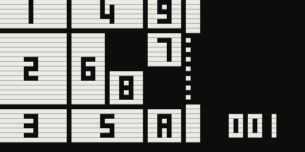

Big Square Puzzle
Tony Horncastle · DREAMER no. 14 (1981-10) p. 15 1K RAM


A sliding-block puzzle: move the big square out through the gate on the right in as few moves as possible. You key the block number and then a direction, and invalid moves are refused. A move counter sits at the bottom right.
Keys
Block number, then 5 up, 8 left, A right, D down.
Files
| File | Version | Load | Run |
|---|---|---|---|
| Big Square Puzzle.c8 | main | 0200-03F1 | C000 |
Listing as transcribed (with notes): big_square_puzzle.txt
Source
DREAMER no. 14 on archive.org, p. 15 (PDF page 17). Author: Tony Horncastle.
Corrections applied
None.
Open doubts
- The article says '5 = down' but the code moves the block up.
- 0362 3A08 13C4 kept as printed: any key other than 5/8/A also moves the block down.